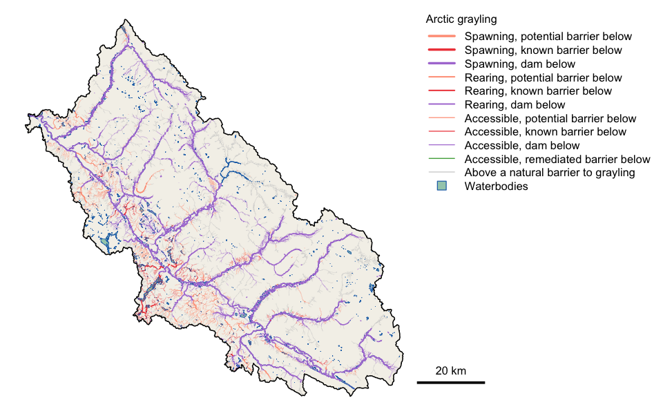

Develop, test and communicate intrinsic habitat and connectivity models for the BC Freshwater Atlas stream network
link is a tool for building models of where each fish species could spawn and rear on a stream network, and which of that habitat fish can reach. Current models rate habitat from stream gradient, channel width and discharge, resolve access past natural barriers such as falls and steep gradients, and record the road and rail crossings and dams that sit below. Its value is flexibility: every rule and threshold is a row in a config, so a model can be changed, run beside another, checked against fish observations and traced back to the rules that produced it.

Arctic grayling habitat in the Parsnip River watershed group. Purple reaches drain to Williston Reservoir behind the W.A.C. Bennett Dam. Orange and red reaches sit above a road or rail crossing that is a barrier. Grey reaches lie above a natural barrier to grayling.
Installation
pak::pak("NewGraphEnvironment/link")link is under active development and its functions change between releases (see NEWS). Pin a release for reproducible work: pak::pak("NewGraphEnvironment/link@vX.Y.Z").
link runs against a PostgreSQL database holding the BC Freshwater Atlas through fwapg, set up as for fresh.
Example
A model is a config, and its rules are tables you can read and edit:
library(link)
cfg <- lnk_config("default")
loaded <- lnk_load_overrides(cfg)
th <- loaded$parameters_habitat_thresholds
th[th$species_code %in% c("BT", "GR"),
c("species_code", "spawn_gradient_max", "spawn_channel_width_min",
"rear_gradient_max", "rear_channel_width_min")]
#> species_code spawn_gradient_max spawn_channel_width_min rear_gradient_max rear_channel_width_min
#> 1 BT 0.0549 2 0.1049 1.5
#> 2 GR 0.0249 4 0.0349 1.5Run it for a watershed group, then sum the habitat each species can reach:
conn <- lnk_db_conn()
cfg$pipeline$schema <- "fresh_default"
lnk_pipeline_run(conn, aoi = "PARS", cfg = cfg, loaded = loaded,
mapping_code = TRUE)
lnk_rollup_wsg(conn, aoi = "PARS", species = c("BT", "GR"),
schema = "fresh_default")
#> wsg species accessible_km accessible_observed_km accessible_unobserved_km
#> 1 PARS BT 6882.15 842.81 6039.34
#> 2 PARS GR 4441.86 596.01 3845.86
#> spawning_km rearing_km rearing_lake_connection_km
#> 1 1682.72 2624.20 40.16
#> 2 983.83 1398.15 30.09Change a threshold, run again, and compare. Each run records its inputs, its parameters and the source versions its data was loaded from, in log tables beside its results.
Learn more
- Bull trout and Arctic grayling in the Parsnip River: a full run for one watershed group, with maps for both species.
- Function reference
Ecosystem
| Package | Role |
|---|---|
| link | Intrinsic habitat models: develop, test and communicate (this package) |
| fresh | Stream network modelling engine: segment, classify, cluster, aggregate |
| wet | Stream flow and water temperature for BC’s Freshwater Atlas |
| gq | Shared map symbology |
Data and methods it builds on
link’s access model follows the method of bcfishpass, built by Simon Norris and maintained with contributions from many groups. link also reads bcfishpass’s community-maintained corrections to crossings, barriers and habitat, synced weekly into the default and bcfishpass configs so they stay in one place. A bcfishpass config applies bcfishpass’s own rules, so results can be checked against the method they come from. Fish observations come from bcfishobs, and the stream network from fwapg and the BC Freshwater Atlas.
Citation
citation("link")License
MIT (see LICENSE). Redistributed bcfishpass data carries its own license: see NOTICE.md and LICENSE-bcfishpass.